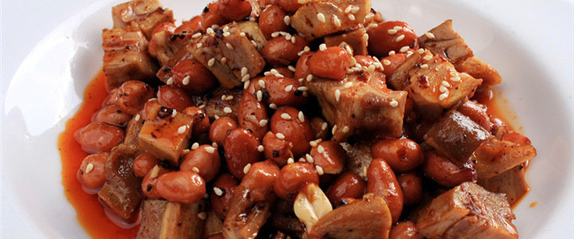
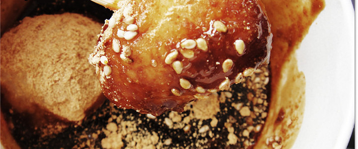
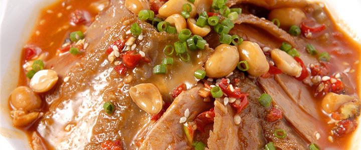
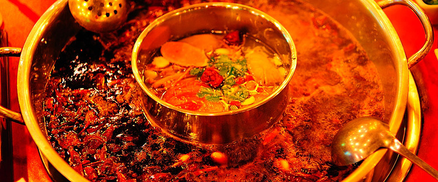
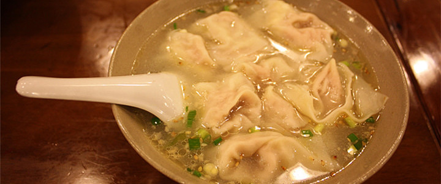

二姐兔丁

二姐兔丁是成都有名的凉菜，曾获“成都名小吃”称号。话说20世纪80年代初，在成都市鼓楼街开设了一家私营饭店，女老板姓陈排行第二，人称二姐。该店经营的拌麻辣兔丁由于掌握了独有佐料秘方，加上用料精细，所以她拌出的兔子，色泽红亮，形态饱满，麻辣适口，香嫩细腻而深受人们的喜爱，店名后改为为“陈记二姐兔丁店”，逐渐发展成为成都名吃。
三大炮

三大炮，其实就是糯米团，是四川著名汉族特色小吃。因为它主要由糯米制成，由于在抛扔糯米团时，三大炮如“弹丸”一样，发出“当、当、当”的响声，故名“三大炮”。三大炮香甜可口、不腻不粘不化渣，且价廉物美。三大炮的发源地虽在成都，而由于成都的高速发展，这门传统的手艺日渐没落，现在成都只有为数不多的几个地方可以吃到正宗的，所以想吃要趁早了。
夫妻肺片

夫妻肺片多用牛杂凉拌，起初不包含牛肺，30年代一对郭姓夫妻制作售卖，非常有名，称“夫妻废片”。色泽红亮，质地软嫩，口味麻辣浓香，传到美国后被称为“斯密斯夫妇”。
四川火锅

四川火锅是长江船工们为了驱寒发明的。重庆火锅崇尚麻辣，蘸料较少；而成都火锅更香且鲜，讲究底料久熬才香，蘸料种类丰富，除了常见的辣椒油还有花生碎、芝麻酱等。
龙抄手

“抄手”是四川人对馄饨的叫法，最有名的是60年老店“龙抄手”。抄手皮薄馅嫩，吃法多样。清汤抄手爽滑鲜香，汤浓色白；红油抄手辛香鲜辣；干拌抄手甜中带辣。